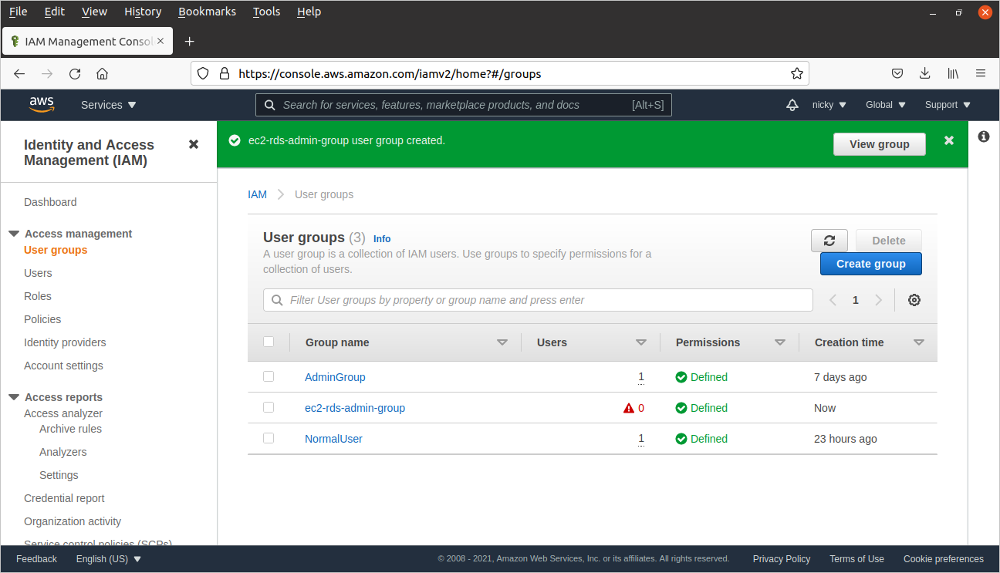
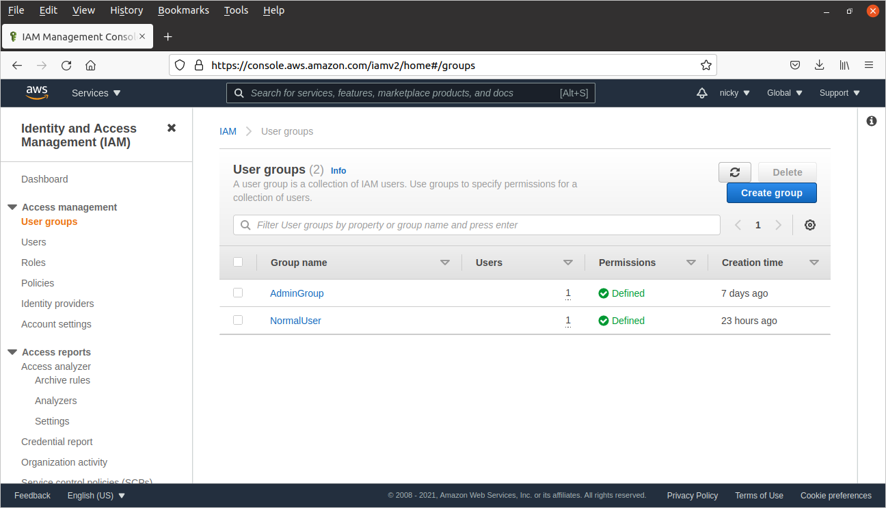

- IAM là gì? AWS Identify and Access Management quản lý các truy cập vào các dịch vụ và tài nguyên AWS một cách bảo mật
-
Root account là tài khoản có đầy đủ tất cả các quyền truy cập tới toàn bộ tài nguyên và dịch vụ
- Best practice trong khi sử dụng AWS một cách bảo mật là không sử dụng root account.
-
Các bước tạo 1 AWS users:

Tạo IAM Group
- Bước 1: Truy cập trang IAM console ở link iam
- Bước 2: Tại thanh điều hướng bên trái, chọn User groups, sau đó bấm Create group
-
Bước 3: Tại trang Create user group, nhập các thông tin sau:
- User group name: ec2-rds-admin-group
- Cuốn xuống mục Attach permissions policies - Optional, tìm và chọn các policy AmazonEC2FullAccess, AmazonRDSFullAccess và DatabaseAdministrator
- Kiểm tra và bấm Create group

- Như vậy, bạn đã tạo thành công IAM Group.
